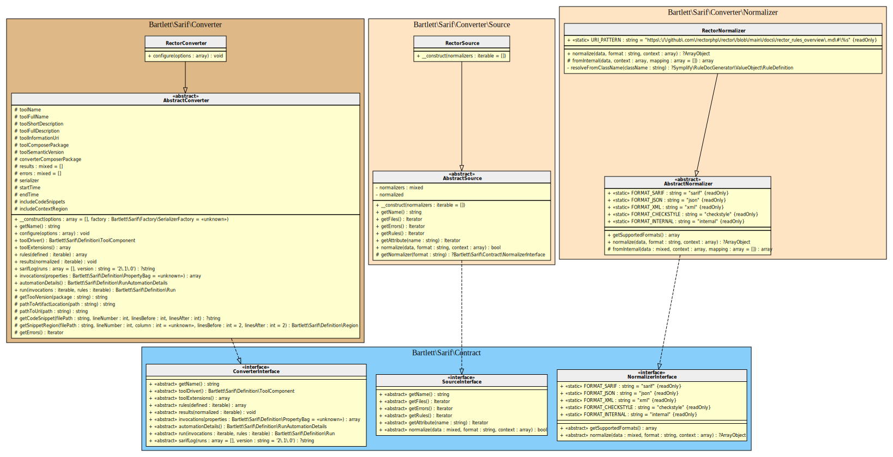
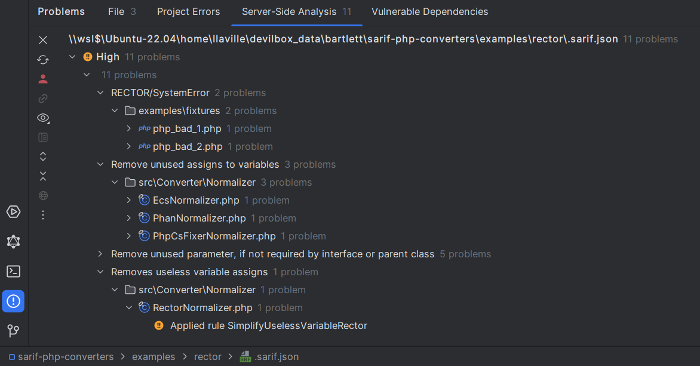

Rector Converter

Note
Available since version 1.0.0
Table Of Contents

Requirements
- Rector requires PHP version 7.2.0 or greater, with
phpstan1.11 or greater - This SARIF converter requires at least Rector version 1.2.3
Installation
Usage
Update your rector.php configuration file
Register at least the RectorFormatter service to be able to specify --output-format sarif with rector command.
<?php
use Bartlett\Sarif\Converter\Reporter\RectorFormatter;
use Rector\ChangesReporting\Contract\Output\OutputFormatterInterface;
use Rector\Config\RectorConfig;
return RectorConfig::configure()
->withPaths([
__DIR__ . '/src',
])
->withPreparedSets(true)
->withRealPathReporting()
->withBootstrapFiles([__DIR__ . '/../../vendor/autoload.php']) // loader for Sarif PHP Converters classes
->registerService(RectorFormatter::class, null, OutputFormatterInterface::class)
;
Then print the SARIF report
vendor/bin/rector process --dry-run --output-format sarif --config /path/to/rector.php > .sarif.json
Warning
Be sure to specify withRealPathReporting, otherwise the Console Tool convert command
will raise some warnings about file names.
Requires at least feature is implemented in a future Rector release.
Learn more
- See demo
examples/rector/directory into this repository.
IDE Integration
The SARIF report file [*].sarif.json is automagically recognized and interpreted by PhpStorm (2024).

Web SARIF viewer
With the React based component, you are able to explore a sarif report file previously generated.
For example: